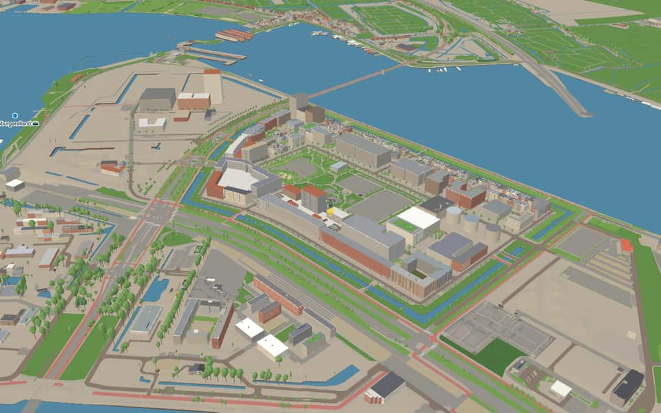
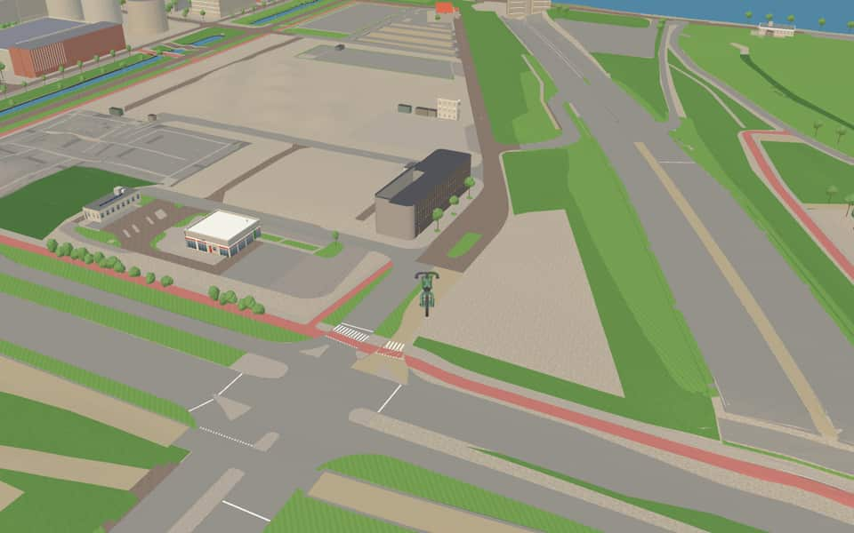
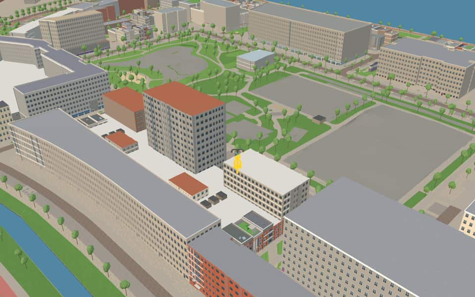

Neighbourhood · Amsterdam
Sportheldenbuurt
The Sportheldenbuurt is a residential neighbourhood on Zeeburgereiland on the east side of Amsterdam, in the Dutch province of North Holland, on the Buiten-IJ between the Zuiderzeeweg and the Zeeburgertunnel. The area is bounded by the IJburglaan, the Ringweg-Oost, the IJ and the Zuiderzeeweg. Wikipedia
The name. In 2011 the Oost borough announced that the streets in the neighbourhood would be named after people from Dutch sports history. Wikipedia
Ride Sportheldenbuurt1 modelled building · 5 facts · 22 name stories


In the game
Frames from a ride through Sportheldenbuurt.



6 more photos of Sportheldenbuurt


.jpg){kind=link}

.jpg){kind=link}


_-_2.jpg){kind=link}

.jpg){kind=link}
Built here
Buildings modelled one by one for the ride.
Politiebureau Oost Zeeburg, Atje Keulen-Deelstrastraat 2, Amsterdam (IJburg/Zeeburgereiland)
Did you know
Trivia the ride can show you here.
- In 2013 and 2014 the first self-built homes were finished here. Wikipedia (translated from Dutch)
- For a long time this was a remote military site with shooting ranges and the Schellingwoude naval seaplane base. Wikipedia
- The land was raised in the early 20th century with silt dredged from the IJ and the Eastern Docklands. Wikipedia
- The first foundation piles for homes were driven here in July 2012. Wikipedia (translated from Dutch)
- In the 1980s the Oost sewage treatment plant was built on the former military ground. Wikipedia
Names on the map
Where the canal, bridge and street names come from.
Bridges
- Cor van der HartbrugCornelis van der Hart (1928-2006) was a Dutch centre-half who began his football career at Ajax in 1947, where he was also assistant coach from 1984 to 1987. Between 1955 and 1961 he played 44 times for the Netherlands national team.Bridge 2195: a reinforced concrete bridge for cyclists, dated 2017 in the city's bridge register.
- Piet DickentmanbrugPieter Casper Johan Dickentman (1879-1950) was an Amsterdam cyclist, the first professional stayer (motor-paced rider) in the Netherlands, and world champion in 1903.Bridge 2193: a reinforced concrete bridge for cyclists, dated 2017 in the city's bridge register.
Streets
- Alida van den BosstraatAlida Johanna van den Bos (1902-2003), an Amsterdam gymnast. With the gymnastics team she won gold at the 1928 Olympic Games in Amsterdam, which made her one of the first Dutch women to become Olympic champions.
- Anthonie van AkenstraatTennis player (1876-1966). She was Dutch champion three times at the beginning of the twentieth century. For a time she played under the pseudonym A.N. Thonie, because otherwise she would have damaged the family's good name. She was the first woman in the Netherlands to dare to serve overarm, although her racket regularly caught on the hat she had to wear on court.
- Atje Keulen-DeelstrastraatSpeed skater (1938-2013). One of the greatest Dutch skaters ever. Her record includes four world titles, three European titles and three medals at the 1972 Olympic Games in Sapporo. She also won 61 skating marathons.
- Bob HaarmslaanBob Haarms was a former AFC Ajax player and later worked for many years as a (rehabilitation) trainer. He was much loved by the club and its supporters.
- Cor van der HartbrugCornelis van der Hart (1928-2006) was a Dutch centre-half who began his football career at Ajax in 1947, where he was also assistant coach from 1984 to 1987. Between 1955 and 1961 he played 44 times for the Netherlands national team.
- Eef KamerbeekstraatEvert Kamerbeek (1934-2008), athlete, eleven times Dutch decathlon champion from 1954.
- Faas WilkesstraatServaas Wilkes (1923-2006), footballer. With his elegant play he was Johan Cruijff's great role model. He was the first Dutchman to play for a top foreign club. Until 1998 he held the Dutch national team record with 35 goals in 38 internationals.
- Foekje DillemastraatAthlete (1926-2007), rival of Fanny Blankers-Koen over 200 metres. After a compulsory sex test in 1950 she was banned for life, on the grounds that she was not fully a woman. The criteria were later changed, and after her death she was rehabilitated.
- Geertje WielemapleinSwimmer (1934-2009), who won a silver medal in the 100 metres backstroke at the 1952 Olympic Games in Helsinki. In 1954 she became the Netherlands' first Sportswoman of the Year.
- John BlankensteinstraatFootball referee (1949-2006), one of the few openly gay people in the football world, who campaigned for gay emancipation.
- Kea BoumanstraatKornelia Bouman (1903-1998), tennis player. Until 1996 she was the only Dutch Grand Slam winner (French Championships, 1927). She won bronze in the mixed doubles at the 1924 Olympic Games.
- Kees BroekmanstraatCornelis Broekman (1927-1992), speed skater. In 1952 he was the first Dutchman to win a Winter Olympics medal, silver in the 5000 metres. He was also second in the 10 km.
8 more streets with a story
- Leo HornstraatLeopold Silvain Horn (1916-1995), football referee, who officiated at international level between 1951 and 1966. Horn was Jewish and a resistance fighter in the Second World War, and later a successful businessman.
- Marie BaronlaanMarie Baron competed as a swimmer at the age of 16 in the modern Olympic Games of 1924 in Paris.
- Mary van der SluisstraatMary Meijer-van der Sluis (1917-1994), fencer, Dutch champion in 1937 and 1947 and a competitor at the 1948 Olympic Games. She had to suspend her sporting career during the war because she was Jewish.
- Nida SenffstraatDina Willemina Jacoba Senff (1920-1995), swimmer, who won gold in the 100 metres backstroke at the 1936 Olympic Games in Berlin. At the turn she forgot to touch the wall, swam back, and still won.
- Piet DickentmanbrugPieter Casper Johan Dickentman (1879-1950) was an Amsterdam cyclist, the first professional stayer (motor-paced rider) in the Netherlands, and world champion in 1903.
- Rie MastenbroekstraatHendrika Wilhelmina Kuypers-Mastenbroek (1919-2003), swimmer, who at the 1936 Olympic Games won three gold medals and one silver, an unprecedented haul for a woman swimmer.
- Roepie KruizestraatJan Hendrik Kruize (1925-1992), hockey player, who won bronze with his team at the 1948 Olympic Games in London and silver four years later in Helsinki.
- ZuiderzeewegThe Zuiderzee, called the IJsselmeer after it was closed off in 1932.
1 other street without a recorded story
Iet van Feggelaarstraat